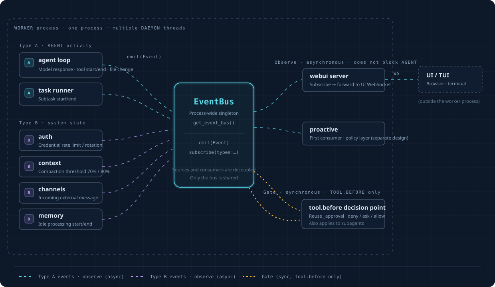

OpenProgram Docs
OpenProgram Docs
Event Layer#
The event layer is one typed event bus for the whole framework. Whenever something happens that another part may want to react to — a tool call is about to run, a turn ended, a file changed, a sub-agent finished, a channel message arrived — the source emits a registered event, and consumers subscribe to it without knowing each other. There are three dispatch kinds: notify events are observed asynchronously and can never slow the source down; gate events (tool.before, turn.stop) run synchronously and any subscriber can veto the action with a reason; transform events (tool.result) let subscribers rewrite a value before the model sees it. Plugins and the hooks key of config.json attach shell commands to these events with the Claude Code hook protocol (JSON on stdin, exit code 2 denies), and every session's events are logged to an events.jsonl file. The Web UI, the proactive engine, Goal and plugins are all just consumers of the same bus.
The layer has ten parts. Where each one lives:
| # | Part | Where |
|---|---|---|
| 1 | Central registry (EVENTS) |
openprogram/runtime/events/registry.py |
| 2 | Event object | openprogram/runtime/events/bus.py (Event, make_event) |
| 3 | Typed dispatch: notify + gate | EventBus.emit / EventBus.emit_gate |
| 4 | Subscription management | EventBus.subscribe / EventBus.subscribe_gate |
| 5 | Error semantics | isolation for notify, fail-open for gates (§4) |
| 6 | Veto protocol | Python return value / shell exit codes (§5) |
| 7 | Event log | openprogram/runtime/events/event_log.py — per-session events.jsonl with rotation (§6) |
| 8 | Threading model | gates run synchronously in the emitter's thread (§4) |
| 9 | Observability | gate verdicts recorded on the event's log line (§6) |
| 10 | Admission boundary | the registry itself; registry.py module docstring |
Everything event-related lives in the openprogram/runtime/events/ package, and every import goes through it
(from openprogram.runtime.events import ...).
1. The Event Model#
The three core fields (what happened + content + time) are fixed; correlation info goes into an open metadata pocket rather than hard-coded fields.
@dataclass(frozen=True)
class Event:
id: str # unique id
ts: float # when it happened
type: str # what kind of event, see §2
origin: str # who triggered it: user / agent / tool / system / proactive
payload: dict # the event's content (command, file path, which account got rate-limited, ...)
metadata: dict # open pocket: {"session":..., "turn":..., "lane":...}, fill in only when needed
Why session/turn go into the pocket rather than being fixed fields: they are not intrinsic properties of an event, they are externally attached correlations, and for half the events (auth, channel) they have no meaning at all. An open dict also lets new correlation dimensions in later without changing the model.
make_event auto-fills id/ts and the session/turn correlation from the store ContextVars when inside a
dispatcher-driven turn; explicit metadata keys win over the auto ones.
2. The Registry — the Admission Boundary#
openprogram/runtime/events/registry.py holds EVENTS = {name: EventSpec(kind, payload_doc)}. An event type
enters the registry only when a real consumer subscribes to it — a moment becomes an event because someone
wants to respond to it, never because the code happens to pass through it. This is the same principle
events/bridges.py applies to type-B sources, and it is what keeps the stream from rotting into a dumping ground.
The registered events:
| type | kind | payload | emitted from |
|---|---|---|---|
ws.frame |
notify | {frame} |
runtime producers that forward an already-rendered WebSocket frame without importing the server |
tool.before |
gate | {tool, tool_call_id, args} |
agent_loop._execute_tool_calls, before every tool.execute() |
tool.result |
transform | {tool, tool_call_id, args, is_error}; value: the result's text |
agent_loop tool dispatch, after a tool returns and before its result enters the model's context; a rewriter returns the text the model sees |
tool.after |
notify | {tool, tool_call_id, is_error, result_text} |
agent_loop._execute_tool_calls, after every tool call finishes |
turn.stop |
gate | {session_id, user_msg_id, assistant_msg_id, last_text (≤4000 chars), stop_hook_active} |
dispatcher.process_user_turn, after a completed top-level chat turn |
turn.start |
notify | {session_id, user_msg_id, assistant_msg_id} |
dispatcher, after the user message is persisted |
turn.end |
notify | {session_id, user_msg_id, assistant_msg_id, usage} |
dispatcher, after finalize |
session.start |
notify | {session_id, agent_id, channel} |
webui session creation (server.py) |
chat.before_send |
notify | {session_id, msg_id, text, agent_id, attachments} |
ws_actions/chat/turn.py, after the user message is persisted, before it enters the runtime |
plugin.enable |
notify | {plugin} |
plugins/loader.py, after the plugin loaded and its hook subscriptions registered |
plugin.disable |
notify | {plugin} |
plugins/loader.py, before the plugin's registrations are dropped |
goal.update |
notify | {session_id, goal: {goal_id, revision, text, status, phase, checklist, budget, usage, pause_reason, last_reason}} |
goal._emit_goal_update |
user.prompt_submitted |
notify | {msg_id, chars} |
dispatcher/prep.py, after the user row persists |
model.response_started / model.response_completed |
notify | {} / {is_error} |
agent_loop, per model response within the loop |
file.changed |
notify | {path, op} |
the write / edit / apply_patch tools |
question.asked |
notify | {session_id, question, ...} |
agent/questions.py |
context.compacted |
notify | {ok, tokens_before, tokens_after, ...} |
context/engine.py |
memory.ingest_started / memory.ingest_ended |
notify | {messages} / {ok, retryable, reason} |
memory/session_watcher.py |
channel.message_inbound |
notify | {channel, peer_kind, chars} |
channels/_conversation.py |
reminder.fired |
notify | {task_id, title, message, session_id, agent_id, wake, scheduled_for, fired_at} |
programs/tools/jobs/cron/worker.py (delivered by scheduler/reminders.py) |
agents.listed |
notify | {sessions, branches} |
list_agents |
branch.message_sent |
notify | {from, to} |
agent(to=...) and send_message |
subagent.started / subagent.ended |
notify | {job_id, label} / {job_id, status, error} |
the job runner (jobs/runner/shared.py) |
security.risky_tool_delegated / security.path_violation |
notify | {session_id, tool, source, authority} / {session_id, tool, reason} |
delegated permission checks (permissions/audit.py); no argument content |
memory.degraded |
notify | {reason_code} |
conversation/memory_execution.py, when optional memory is unavailable for a turn |
mcp.request.cancelled |
notify | {request_id, session_id, client_id, reason} |
the MCP server, when a prompt request is cancelled |
skills.changed |
notify | {} |
the skills watcher (server.py) |
plugins.update_available |
notify | {plugin, current, latest} |
the plugin update checker (server.py) |
Every emit_safe type string in the codebase is registered — a test enforces the subset
(test_every_emitted_type_is_registered). Emitting an unregistered type logs one warning per type
(never raises), which catches new emit sites that skip the registry.
3. Three Dispatch Modes#
Notify (default, asynchronous): emit(event) fans out to subscribe(handler, types={...}) subscribers,
fire-and-forget. The emitter never waits; a slow or broken subscriber cannot slow the framework down.
Gate (synchronous veto): emit_gate(event, timeout_s=None) -> GateOutcome{allowed, reasons} calls every
subscribe_gate(type, fn) subscriber for that type, in registration order, in the emitter's thread. Any
returned reason makes allowed=False; reasons aggregate. subscribe_gate returns an unregister function,
like subscribe.
Transform (synchronous rewrite): emit_transform(event, value) passes value through every
subscribe_transform(type, fn) subscriber in registration order, in the emitter's thread; each returns the value
the next one sees (None keeps it). A raising rewriter is skipped and its input carries on. tool.result is the
one transform event: it lets a plugin shorten or redact a tool's text before the model reads it. Shell hooks cannot
subscribe to a transform event.
Gate rules:
- Fast only. A gate sits in the middle of the action's path — no LLM calls, no slow IO.
- Re-entrancy guard: a nested
emit_gatefor the same type in the same thread allows immediately with a warning, so a gate can never gate itself into a loop. timeout_sis a soft overall budget: once exceeded, the remaining gates are skipped fail-open with a warning.- Both classes apply to subagents:
tool.beforesits outside the permission_mode approval wrapper, sopermission_mode="bypass"cannot turn it off.
4. Error Semantics and Threading#
- A raising notify subscriber is isolated: logged, other subscribers still run, the emitter never sees it.
- A raising gate subscriber is fail-open: logged to stderr, treated as allow — one gate's bug must not brick every tool call.
- Shell subscribers always run under a timeout (default 60 s, configurable per hook); a timeout is fail-open with a warning.
- Gates run synchronously in the calling thread; notify handlers run in the emitter's thread too (async handlers are scheduled on the running loop when one exists).
5. The Veto Protocol#
Python gate functions (the ToolGate signature): return None to allow, a reason string to deny. The merged
deny reason reaches the actor — for tool.before it becomes the model's error tool result via
ToolGateDenied; for turn.stop it becomes the continuation prompt prefixed with [hook].
Shell subscribers follow the Claude Code hooks exit-code protocol. The Event arrives as JSON on stdin.
| exit code | meaning |
|---|---|
| 0 | allow |
| 2 | deny; stderr is the reason |
| anything else | fail-open, logged as a warning |
Shell subscribers come from the top-level hooks key in config.json
(registered as the hooks setting in state/settings.py):
{
"hooks": {
"turn.stop": [{"command": "python check_done.py", "timeout": 30}],
"turn.end": [{"command": "notify-send 'turn finished'"}]
}
}
At worker start, openprogram.runtime.events.install_config_hooks() (shell_hooks.py) registers each command: gate-kind events get a synchronous
shell gate, notify-kind events get a background runner (daemon thread, exit code ignored, failures logged).
Config edits apply on the next worker restart.
The turn.stop continuation loop#
dispatcher/stop_hook.continue_stop_hook_turns asks the turn.stop gate after every completed top-level
chat turn. Goal Workflow rounds do not enter this dispatcher path: the single goal() function owns their
completion judge, and /goal clear can stop the Goal state. A denial launches one more ordinary turn with
dataclasses.replace, source="hook_continue", and INHERIT_PARENT, then the gate runs again on
the new result. Runaway protection is the stop_hook_active flag protocol (as in Claude Code / Codex stop
hooks — no numeric cap): payload["stop_hook_active"] is True on every ask after the first, so a hook knows
it already forced a continuation and is expected to allow the stop. Failed or cancelled turns return without
asking the gate. Head movement stays with the normal TurnWriter path inside each turn.
6. The Event Log#
The process-wide bus appends every completed typed dispatch as one JSON line, always on:
~/.openprogram/projects/<project-id>/chats/<sid>/events.jsonlwhen the event carries a session whose directory exists;~/.openprogram/logs/events.jsonlotherwise.
A file past 5 MB rotates to .1 (replacing the previous .1). Gate verdicts are recorded on the same line as
a gate field — {allowed, reasons, duration_ms, subscribers} — not emitted as a second event. This is the
layer's observability: read the log after a real turn to see the full stream and every gate decision.
When a registered gate event first passes through emit(event) for typed observers, that notify phase defers
the disk write. The same Event must then reach emit_gate(event), which writes the single verdict-enriched row.
Calling emit alone for a gate type is an incomplete dispatch: observers still receive it, but no event-log row
is written before the verdict exists. emit_gate(event) is also a complete gate-only dispatch—the current
turn.stop path uses it directly—so it writes one verdict row without invoking typed observers. Notify-kind
events continue to log during emit.
7. Placement: a Process-Level Singleton Bus#
All the relevant components (webui, agent loop, channels, memory, auth, task runner) run in the same worker
process (each as a daemon thread). So the bus is a process-level singleton in openprogram/runtime/events/bus.py, with
a get_event_bus() accessor following the same double-checked-locking pattern as get_store()/get_runner().
Only the singleton writes the event log; isolated buses from create_event_bus() (tests, embedded use) stay
silent.
Dependency direction: the event system imports nothing from webui. webui subscribes to the bus (the
ws.frame pass-through envelope); the bus does not know webui exists.
8. Architecture Diagram#

Interactive version (full visualization page with animated event flow):
event-layer.html
- The bus is the sole hub: sources and consumers don't know each other, they only know the bus.
- webui and proactive are both just consumers, at the same level. proactive is an application on top of the layer, not part of it.
- Gate dispatch is the single synchronous line; everything else is asynchronous observation.
9. Wiring Summary#
| consumer-facing surface | backed by |
|---|---|
tool_gate.register_tool_gate / decide_tool_gate / ToolGateDenied |
thin shell over subscribe_gate("tool.before", ...) / emit_gate (openprogram/runtime/events/tool_gate.py), the entry agent_loop and the proactive engine call |
plugin hooks |
extensions/plugins/hooks.py reads the manifest's hooks mapping — OpenProgram's config.json shape or Claude Code's hooks/hooks.json shape, whose PreToolUse / PostToolUse / UserPromptSubmit / Stop / SessionStart map to tool.before / tool.after / chat.before_send / turn.stop / session.start — and mounts each command through the plugin's ProgramContext with the shell protocol of §5, so disabling the plugin unsubscribes it |
/goal state changes |
goal._emit_goal_update also emits goal.update |
config.json hooks |
openprogram.runtime.events.install_config_hooks() at worker start |
| type-B sources (auth, context, channels, memory) | openprogram/runtime/events/bridges.py bridge + per-source emit_safe taps |
Implementation status#
The bus, the registry with its three dispatch kinds, shell hooks from config.json and plugin manifests, the per-session event log and the bridges listed above are implemented in openprogram/runtime/events/. sessions.listed is registered but currently has no emitter.